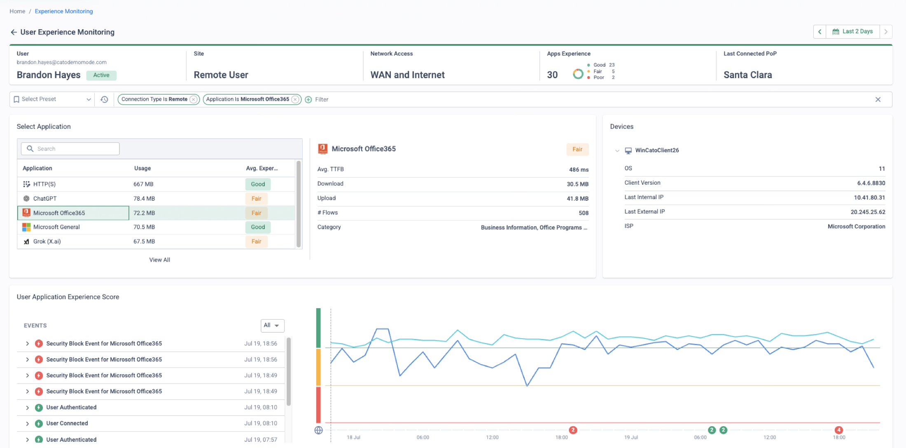

Why refresh time is the right time
Palo Alto customers rarely move on a whim — the trigger is the refresh quote. The PA-3200 and PA-5200 series hit end-of-sale on 31 August 2023, with support ending on 31 August 2028, so a large slice of the installed base has a forced decision point on the calendar. Each refresh re-buys not just the appliances but the whole subscription stack — Threat Prevention, Advanced URL Filtering, Advanced WildFire, DNS Security, GlobalProtect, SD-WAN — each licensed per firewall, each sized per box.
Meanwhile the appliances themselves are an attack surface: CVE-2024-3400 (CVSS 10.0) was an actively exploited zero-day command injection in the GlobalProtect portal/gateway that forced emergency hotfix cycles across every exposed firewall. Panorama adds an operations tax of its own — it is software the customer must size, run and upgrade, and its compatibility matrix forces Panorama-first upgrade sequencing. And when the customer asks how they would even migrate config, the answer is telling: Expedition, PAN's own migration tool, reached end-of-life on 31 December 2024 with no successor product — there is no vendor-supported self-service path even for PA-to-PA moves.
This page is authored from vendor documentation and Cato PS methodology research; it is not a delivery-verified runbook. Validate scope, sequencing and dates with Cato Professional Services before committing a plan to a customer.
The refresh treadmill
- EOS/EOL cycles force re-purchase of hardware every few years
- Security value sold as stacked per-device subscriptions
- Bundles are commonly over- or mis-bought across an estate
- Sizing guesswork repeats every cycle — and TLS decryption eats it fastest
The operations tax
- Panorama is customer-run software: sizing, HA, log collectors, upgrades
- Compatibility matrix forces Panorama-first upgrade projects
- Emergency PAN-OS hotfix weekends (CVE-2024-3400 et al.)
- On Cato, the inspection stack is a self-maintaining PoP capability — no customer-side patching
“What does the next hardware refresh plus the subscription stack actually cost across the estate — and how many change windows did the CVE-2024-3400 hotfixes take?” Anchor the business case to their numbers, not ours.
What maps to what
Nothing on this table is a file-format conversion — it is a functional translation, and the third column is where migrations are won or lost. Walk it with the customer during discovery so nobody discovers a gap at cutover.
| Palo Alto component | Cato equivalent | Watch for |
|---|---|---|
| PA-series NGFW / VM-Series | Cato Socket (X-series) / vSocket + single-pass inspection at the PoP | The Socket is a thin SD-WAN edge — all security runs in the PoP; the Socket LAN Firewall covers intra-site L3/L4/L7 flows |
| App-ID | Cato application awareness — app catalogue + custom apps | Custom App-IDs must be re-created as Cato custom apps or FQDN/IP objects; signatures do not transfer |
| Security zones + zone-based rulebase | WAN Firewall + Internet Firewall + Socket LAN Firewall | No zone construct. WAN FW default-blocks, Internet FW default-allows — opposite postures must be designed for |
| Content-ID stack (Threat Prevention, Adv URL Filtering, Adv WildFire, DNS Security) | Cato IPS, NG Anti-Malware, sandboxing, DNS protection, SWG categories | Platform capabilities at every PoP — nothing licensed or sized per box |
| Decryption policy | Cato TLS Inspection policy (account-level, wizard-assisted) | Rebuilt via Cato's phased best practice, not ported; carry the intent of exclusions, not the rules |
| User-ID | User Awareness — AD/LDAP sync, SCIM, Cato Identity Agent | SCIM via Entra ID / Okta; check identification licensing for non-SDP users during design |
| GlobalProtect (client, portal, gateway) | Cato Client (SDP/ZTNA) + Browser Access (clientless) | Always-On, pre-login and split-tunnel behaviour set in the Client Connectivity Policy — agree it per cohort |
| GlobalProtect HIP checks | Device Posture profiles & checks | Usable in Client Connectivity and firewall rules, with continuous re-checks; map each HIP object in discovery |
| Panorama (device groups, templates, log collectors) | Cato Management Application (CMA) | SaaS — no appliance, no version ladder; plan SIEM export and log retention before decommissioning collectors |
| Prisma Access | Cato SASE Cloud — every PoP delivers full SSE | One engine and one policy set versus a multi-console, multi-engine assembly |
| Prisma SD-WAN (ION appliances) | Cato Socket SD-WAN — same platform | If present, it migrates in the same site cutover as the firewall |
| NAT policy | Site-level NAT (outgoing) + Remote / Local Port Forwarding (inbound) | Branch NAT mostly disappears (PoP handles SNAT); DNAT-published services must be consciously re-homed and DNS updated |
| Site-to-site IPsec on the PA | Cato IPsec sites (IKEv1/v2), BGP supported | Partner VPNs terminate at the PoP, not on site hardware |
Four phases, parallel from day one
Cato Professional Services runs delivery in four phases — Discover & Design → Pilot, Build & Initial Rollout → Advanced Security & Broader Rollout → Tune, Optimise & Handover — typically across a ~4-month example plan. The architectural pattern underneath is co-existence, not big-bang: the socket installs in parallel, the PA firewall stays the default gateway, and a routing handoff decides — per prefix — which network carries each subnet.
-
Phase 1 — Discovery & co-existence design
Standard PS discovery — objectives, traffic flows, site interdependencies, routing strategy, DMZ/voice/internet integration — then agree the migration options and co-existence strategy. Export the PA estate from Panorama: CSV/PDF from the Policies tab, full XML via Save and Export Panorama and Firewall Configurations (or the XML API per device group), including pre-/post-rules, shared objects, NAT, decryption and GlobalProtect config. Expedition is EOL, so treat conversion as an engineering workstream — PS schedules “Security Policy Conversion” explicitly. Clean before you translate: strip disabled, shadowed and zero-hit rules (Panorama rule-usage data finds them), then map each zone to Cato constructs — what lands in the WAN Firewall (allowlist), Internet Firewall (blocklist) and Socket LAN Firewall. Distribute the Cato Client and TLS root certificate early, plan SCIM/LDAP provisioning and SIEM integration, and ship sockets.
-
Phase 2 — Pilot, build & initial rollout
Access → Client Connectivity Policy
Convert and implement policies, then stand up sockets at the data centres alongside the PA estate — the PA remains L3 default gateway and a LAN transit VLAN carries either static routes or an eBGP handoff between socket and PA; migrated subnets route to Cato per prefix, everything else stays put (Cato-learned routes can be tagged with the Cato ASN and community 32768 for clean isolation). Deploy the Cato Client to pilot users, run Client Connectivity and Device Posture in monitor mode for discovery, and validate inbound flows (Remote Port Forwarding) and return-path routing before any site cutover.
-
Phase 3 — Advanced security & broader rollout
Security → TLS Inspection
Move GlobalProtect users to the Cato Client in cohorts (the PS plan runs SDP Migration Groups 1–4 across months 2–4): enrol via SCIM, enable the Client, confirm app access, then remove GlobalProtect from that cohort — do not leave both clients active long-term. Rebuild TLS inspection with Cato's phased best practice — block QUIC, deploy the root certificate, start with high-risk/low-impact categories and widen while tuning bypasses for pinned apps. Enable IPS/NGAM in the monitor-then-block progression, CASB discovery and DLP monitor mode, and migrate branches in waves — each site's default route moves to the socket in its own cutover window.
-
Phase 4 — Tune, optimise & decommission
Monitor → Events
Fine-tune policy, validate controls, review alerting and hand over to BAU. Then decommission in order: GlobalProtect portals/gateways once the last cohort has moved → branch PAs → the DC PA's edge role (the box may persist temporarily for east-west DC filtering — see gotchas) → Panorama and log collectors last, after log retention obligations are satisfied and archives exported → terminate subscriptions at renewal.
Every phase is reversible
Withdraw the static route or BGP prefix and traffic reverts to the PA instantly — rollback is a routing change, not a rebuild.
Routing decides, not rip-and-replace
Three placement patterns — L3 switch as gateway, PA stays gateway with a handoff, or socket becomes gateway — chosen per site.
Interconnect hub for multi-site estates
Legacy and Cato islands keep talking throughout. Parallel connectivity per site works below roughly 20 sites; hub or regional patterns above.
No inspection gap
The PA keeps protecting non-migrated traffic while the Cato PoP inspects migrated subnets from day one — nothing rides unexamined.
Run both cleanly — and know your way back
The parallel patterns above are proven, but DIY co-existence has four classic failure modes. Design them out up front:
Asymmetric routing vs the stateful PA
If traffic egresses via Cato but returns via the PA (or crosses regions through different hubs), the PA's stateful inspection drops the unseen flow. Fixes: parallel connectivity per region, hub anchoring, or AS-path design that keeps regional symmetry.
Double TLS inspection
PA decryption left enabled on a path Cato also inspects means certificate-on-certificate errors and pinned apps failing twice over. Disable PA decryption for Cato-routed traffic, or scope Cato TLSi to bypass PA-inspected paths until cutover. Remember: TLSi is rebuilt on Cato, not ported.
Dual VPN clients
Cato documents that third-party VPN drivers on the same machine can conflict with and override Cato Client settings, and full-tunnel alongside another VPN is not recommended. Keep the GlobalProtect-to-Cato switch per cohort short and scripted: install Cato Client → validate → uninstall GlobalProtect.
Opposite default postures
PA admins think in zones with explicit interzone-deny. Cato's WAN Firewall is an allowlist (implicit block) but the Internet Firewall is a blocklist (implicit allow) — a surprise if discovered at cutover. Add explicit blocks/allows to match risk appetite in the design workshop, not on the night.
Rollback levers, phase by phase
| Phase | Rollback lever |
|---|---|
| Pilot site | Remove the static route / withdraw the BGP prefix at the L3 switch or PA — traffic reverts to the PA instantly |
| Subnet migration (routed-range pattern) | Re-add the dummy range on the Cato site and restore the statics at the interconnect — this is the designed rollback |
| BGP handoff | Disconnect/reconnect the site LAN — prefixes withdraw and propagate automatically |
| User cohorts | Re-enable GlobalProtect for the affected cohort — keep the GP portal/gateway warm until the final wave completes |
| TLS inspection | Roll back to an earlier enablement phase without disabling TLSi entirely |
| Full site | Physical LAN cutover reversal — big-bang LAN cutovers rate as “complex rollback”, which is exactly why the parallel patterns are preferred |
Gotchas — and how to handle them honestly
“App-ID is more mature”
Both platforms do inline L7 app identification; the practical gap is custom App-IDs and niche signatures. Inventory them in discovery, re-create as Cato custom apps or FQDN/IP objects, validate each in the pilot. Sell policy-outcome parity, never signature-for-signature parity.
The zone-model mindset
Cato has no zone construct — the world splits into WAN FW (implicit block) and Internet FW (implicit allow). Zones with no direct equivalent (multi-vsys separations) go on the design-workshop agenda, and the Internet FW gets explicit rules to match the customer's risk appetite.
NAT is narrower, on purpose
PA's freeform NAT (U-turn, bidirectional DNAT, NAT between zones) is broader than Cato's site NAT plus RPF/LPF publishing. Most branch NAT simply disappears — the PoP handles internet SNAT — but audit DC NAT rules line by line; a few may need redesign.
Decryption does not port
Set the expectation in discovery: TLSi is a re-implementation with its own phased rollout. Pinned apps need bypass rules, and TLSi is not supported for Android devices — check the estate's mobile posture early.
East-west DC micro-segmentation
A customer using PA for intra-DC micro-segmentation can keep a DC firewall for deep east-west policy in the near term — a scoped carve-out, not a blocker. The Socket LAN Firewall covers L3/L4/L7 segmentation of socket-attached VLANs; position edge/WAN/SSE first, DC interior on its own timeline.
HIP parity questions
HIP needs a GlobalProtect gateway licence per gateway; Cato Device Posture checks (AV, firewall, disk encryption, patch level, device certificate) are configured centrally and enforceable in Client Connectivity and firewall rules. Map each HIP object to a posture profile in discovery — most translate directly.
“Panorama gives us staged commits”
CMA is SaaS with centralised policy and a full audit trail. The counter is what Panorama costs to keep: its own hardware/VM sizing, HA and the PAN-OS version-compatibility ladder that forces Panorama-first upgrade sequencing — versus zero customer-maintained management infrastructure.
“We already own Prisma Access”
Prisma Access is PAN-OS assembled across public-cloud PoPs with multiple management surfaces; comparisons consistently cite higher deployment complexity and fragmented licensing versus Cato's single engine and console. Anchor on operational effort and console/policy count, not feature checklists.
Log retention & compliance
Export or archive Panorama and log-collector data before decommissioning to satisfy retention obligations, and plan the Cato-side SIEM integration in Phase 1 so there is never a visibility gap.
How to prove it in the customer's tenant
The displacement PoV is deliberately small: one branch, one parallel socket, the PA estate untouched. The only Palo Alto-side change in the whole engagement is a single route (a static or one eBGP neighbour) — the rulebase, Panorama and GlobalProtect all stay exactly as found, which is also what makes rollback a routing change rather than a project. Everything else happens in the customer's Cato tenant: a bounded slice of the App-ID rulebase translated monitor-first, a pilot cohort moved from GlobalProtect to the Cato Client, and threat prevention proven on real traffic. Agree the success criteria before configuring anything, per Running a Cato PoV — and book the decision meeting at the same workshop.
| # | Success criterion | Evidence artefact | Where it lives |
|---|---|---|---|
| 1 | Co-existence holds — the socket carries the migrated pilot subnet in parallel while the PA remains default gateway, with no user-visible disruption | Dated day-one screenshots: tunnels up, handoff routes exchanged, first traffic flowing | Monitor → Topology Network → Sites |
| 2 | Policy parity on a representative slice — the 15–20 highest-hit App-ID rules translated and firing with the same intent (same flows allowed and blocked) | Per-rule events compared against the Panorama rule-usage baseline exported in week zero | Monitor → Events Security → Internet Firewall |
| 3 | The GlobalProtect pilot cohort works a full week on the Cato Client — always-on enforced, posture checks passing, no fallback to GP | Experience Monitoring scores for the cohort; connected-client inventory; helpdesk ticket count from the group | Monitor → Experience Monitoring |
| 4 | Threat-prevention verdicts demonstrated — IPS and Anti-Malware run monitor-first on pilot traffic, then block, with a harmless test detection stopped and attributed | Threat events attributed to user, device and site; block-page screenshot after the flip | Monitor → Threats Dashboard |
| 5 | Rollback shown to be a routing change — withdraw the handoff route in a change window and traffic reverts to the PA, timed and evidenced | Before/after Topology views with timestamps; the reversion window measured in minutes | Monitor → Topology Administration → Audit Trail |
- Trial licences confirmed for every capability under test — Cato Client (SDP) seats for the pilot cohort, IPS, Anti-Malware and TLS inspection.
- TLS inspection staged first where content-level verdicts matter (Anti-Malware file verdicts, full-path URL matching) — follow the phased approach in TLS Inspection: Staged Rollout Playbook, with the root certificate deployed to the pilot cohort only.
- Identity in place — the pilot cohort exists as a SCIM/LDAP-provisioned group in CMA and is syncing before any user-scoped rule is written.
- The Panorama baseline — a read-only export of the branch's device group with rule-usage data. This is the yardstick criterion 2 is measured against, and the only thing the PoV ever asks of the PA estate besides the handoff route.
- Scope — one branch socket (shipped and staged), a transit VLAN agreed with the network team, and a change window for the handoff route and for the rollback rehearsal.
-
Week zero — capture the PA baseline before touching anything
Export the pilot branch's rulebase with usage data from Panorama (CSV from the Policies tab, plus rule-usage columns) and pick the representative slice: the 15–20 highest-hit rules, deliberately including at least one custom App-ID, one URL-category control and one User-ID-scoped rule — the three shapes that stress the translation. Dead rules stay dead: zero-hit rules are out of PoV scope by design.
# Panorama CLI — hit counts for the pilot branch's device group (PAN-OS 8.1+) show rule-hit-count device-group <pilot-dg> pre-rulebase security rules all # Plus: Policies tab → export CSV with rule-usage columns for the same device group
-
Stand up the parallel socket at the pilot branch
Network → Sites
Create the site, connect the socket on the transit VLAN and let it tunnel out through the existing internet path — the PA remains L3 default gateway and nothing changes for users. Confirm in Monitor → Topology that the site is up against its nearest PoP, and take the dated day-one screenshots: this is evidence item zero for criterion 1.
-
Configure the handoff — default-gateway statics or eBGP
Network → Sites → Site Settings → BGP
Per the co-existence pattern above, either point statics for the pilot subnet at the socket from the L3 switch/PA, or bring up an eBGP neighbour: set the peer and Cato ASNs in ASN Settings, the peer IP, and advertise Summary routes towards the PA with the metric set so the PA still prefers its own default; verify with Show BGP Status (Configuring BGP Neighbors on a Cato Socket). Either way, the pilot subnet now reaches Cato per prefix — and the rollback lever for criterion 5 already exists.
-
Translate the App-ID slice — monitor-first
Security → Internet Firewall Security → WAN Firewall
Rebuild the slice with ports re-pinned wherever the original said application-default, and re-create custom App-IDs as Cato custom apps — protocol, ports, destination IP and domain/FQDN criteria, placed above broader catalogue apps because the rulebase is first-match (Working with Custom Apps). Every translated rule gets Event tracking; nothing blocks that the PA did not already block. The full four-domain method, clean-up discipline and a worked before/after example live on Palo Alto Policy Migration — the PoV runs that method on the slice only.
-
Move the pilot cohort from GlobalProtect to the Cato Client
Access → Device Posture Access → Client Connectivity Policy
Map the cohort's HIP objects to Device Posture profiles (anti-malware running, disk encryption, patch level, device certificate) and reference them from Client Connectivity rules, with continuous posture checks at the recommended 10-minute interval (continuous posture checks). Scope an always-on rule to the cohort — Client Connectivity and Device Authentication settings take precedence over it (Protecting Users with Always-On Security). Then switch each machine scripted and short: install Cato Client → validate app access → uninstall GlobalProtect. Do not leave both clients resident — see co-existence above.
-
Threat prevention — monitor, then block, on the pilot scope
Security → IPS Security → Anti-Malware
Enable IPS in monitor mode — verdicts generate events while traffic continues (Configuring the IPS Policy) — and Anti-Malware with NG Anti-Malware on top of it (Configuring the Anti-Malware Policy). Review a week of verdicts with the customer, then flip the pilot scope to block and demonstrate a harmless test detection stopped, block page shown, event attributed to user, device and site — criterion 4 evidenced in one screen.
-
Build the evidence pack — and rehearse the rollback
Monitor → Events
Filter events per translated rule and set the counts against the week-zero Panorama baseline: same flows, same intent, now with user and device attribution. Capture the cohort's Experience Monitoring week and the threat events. Then close the loop on criterion 5 in a change window: withdraw the handoff route (remove the static or disable the BGP neighbour), watch traffic revert to the PA, time it, screenshot it, restore it. A rollback that has been rehearsed and measured is the strongest slide in the wrap-up deck.
What good output looks like


Troubleshooting the PoV
Asymmetric routing through the PA
Migrated-subnet sessions stall or reset: traffic egressed via Cato but returned via the stateful PA, which drops the unseen flow. Check the PA session table for half-open sessions to the pilot subnet; fix by advertising the pilot prefix consistently in both directions and never splitting a flow's egress and return between the two edges.
App-ID vs Cato classification — compare fairly
The same flow can be web-browsing + ssl on the PA and a named catalogue app on Cato, so rule names will never line up. Compare on flow outcomes — source, user, destination, allow/block — not on labels; re-pin application-default ports; and give every custom App-ID a custom app, or its traffic silently matches a broader category.
HIP vs Device Posture mapping
A device that passed HIP at gateway login can fail Cato posture, because checks re-run continuously (10-minute interval) rather than at connect. Validate every mapped check on a reference machine before scoping Client Connectivity rules to the profile — and stage posture in monitor so a failed check is an event, not a locked-out pilot user.
TLSi exclusions — and double inspection
Pinned apps failing, certificate warnings doubling up: PA decryption is still active on a path Cato now also inspects. Disable PA decryption for Cato-routed pilot traffic, carry the intent of the PA SSL exclusion list into Cato bypass rules (the wizard's Sensitive Categories and Embedded OS bypasses are the starting point), and block QUIC so traffic stays inspectable.
User-scoped rules that never match
A translated User-ID rule shows zero events: the SCIM/LDAP group is empty or stale in CMA, so the rule cannot match. Check the group's membership under Access before touching the rule — identity provisioning lag, not translation, is the usual culprit.
Cohort machine sends no traffic via Cato
GlobalProtect was left installed alongside the Cato Client, and its driver is overriding Client settings — the documented dual-VPN conflict. Uninstall GP from the machine, reboot, reconnect. Keep the per-machine switch scripted so the two clients never cohabit longer than the validation takes.
Gotchas & exit
- Each capability under test needs its trial licence live for the whole PoV window — a licence lapsing mid-pilot reads as a product failure.
- TLS inspection is not supported for Android devices — keep them out of the pilot cohort or scope the criterion around them.
- DC east-west micro-segmentation and API-based SaaS scanning are out of PoV scope by design — park them in the next-steps register, per the framework page.
- Export the evidence pack weekly, not at the end — screenshots and event exports dated as they land, so the wrap-up reads a register rather than excavating history.
Exit has two doors, both clean. If the criteria pass, nothing is thrown away: the pilot branch, handoff and cohort become Phase 2 of the migration path above, and the parked asks become the rollout scope. If the customer stops, the unwind is the rollback rehearsal run once more without the restore: withdraw the handoff route, re-enable GlobalProtect for the cohort (the portal stayed warm throughout), uninstall the Cato Client, and export the evidence pack and Administration → Audit Trail before trial licences lapse. The PA estate ends the engagement exactly as it started — one route removed, nothing else ever changed.
Resources
Documentation
Sources. Vendor-verifiable anchors on this page: PA-3200/5200 end-of-sale and support dates from PAN's hardware end-of-life announcements; CVE-2024-3400 from the PAN security advisory and NVD; Expedition's retirement per PAN-SA-2025-0001; Panorama upgrade sequencing from the Panorama compatibility matrix; per-firewall subscription stacking from PAN's subscription documentation. Cato behaviours cite the Learning Center articles linked above; phase structure and co-existence patterns follow Cato PS methodology.